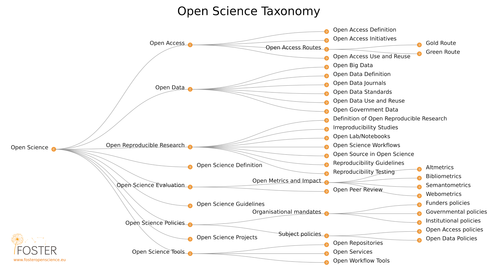

1. Concetti e principi “open”
Di che cosa si tratta?
La Scienza Aperta è un modo di fare scienza che permette a chiunque di collaborare e dare il proprio contributo, avendo a propria disposizione, in maniera aperta, i dati grezzi della ricerca, gli appunti di laboratorio e altri processi di ricerca in formati che ne facilitano il riutilizzo e la ridistribuzione nonché la riproducibilità della ricerca, dei dati e dei metodi su cui si fonda (Definizione di Scienza Aperta del progetto FOSTER). In sintesi, la Scienza Aperta è conoscenza trasparente e accessibile, condivisa e portata avanti attraverso reti di collaborazione (Vicente-Sáez & Martínez-Fuentes 2018).
Scienza Aperta è sinonimo di maggiore rigore, responsabilità e riproducibilità della ricerca. Si basa sui principi di inclusione, correttezza, equità e condivisione e cerca essenzialmente di cambiare il modo in cui si fa ricerca, chi ne è coinvolto e come viene valutata; mira a rendere la ricerca più aperta alla partecipazione, revisione/confutazione, perfezionamento e (ri)utilizzo a beneficio di tutti.
Ci sono diverse definizioni di "apertura" a seconda dei diversi aspetti della scienza; la Open Definition la definisce come: "i dati e contenuti aperti che possono essere liberamente utilizzati, modificati e condivisi da chiunque per qualsiasi scopo". La Scienza Aperta comprende una varietà di pratiche che di solito includono l’accesso aperto alle pubblicazioni, i dati grezzi della ricerca aperti, software libero, flussi di lavoro aperti, scienza partecipativa, risorse aperte per l’apprendimento e l’insegnamento e metodi alternativi per la valutazione della ricerca inclusa la revisione aperta tra pari (Pontika et al., 2015).Pontika et al. (2015)
Gli obiettivi e le ipotesi alla base delle motivazioni che spingono a mettere in pratica queste diverse pratiche sono stati oggetto di analisi da parte di Fecher & Friesike (2013), i quali, attraverso lo studio della letteratura, hanno individuato cinque ampie problematiche o "scuole di pensiero":
Scuola democratica: partendo dal presupposto che l'accesso alla conoscenza non sia equamente distribuito, quest'area si occupa di rendere il sapere accademico (incluse pubblicazioni e dati) liberamente disponibile a tutti.
Scuola pragmatica: in base al principio secondo il quale la creazione della conoscenza è resa più efficiente attraverso la collaborazione e rafforzata attraverso la critica, quest'area cerca di sfruttare l’efficacia dei sistemi di rete che collegano tra loro gli studiosi e rendono i metodi accademici più trasparenti.
Scuola delle infrastrutture: questa visione si basa sul presupposto che una ricerca efficiente richiede piattaforme, strumenti e servizi prontamente disponibili per la diffusione e la collaborazione.
Scuola della platea pubblica: avendo riconosciuto che per esercitare un impatto reale sulla società questa deve essere coinvolta nelle attività di ricerca attraverso la comunicazione dei risultati della ricerca scientifica di facile comprensione, quest'area cerca di portare il pubblico a collaborare con la ricerca attraverso la “cittadinanza partecipativa” e a facilitare la comprensione della conoscenza per mezzo di brevi testi riassuntivi, blog e altri strumenti di comunicazione meno formali.
Scuola della valutazione: traendo la propria motivazione dal fatto che le metriche tradizionali per misurare l'impatto scientifico sono risultate discutibili (per esempio, troppo incentrate sulle pubblicazioni, e spesso solo a livello di rivista), questo filone cerca delle "metriche alternative" che possano trarre vantaggio dalle nuove funzionalità che gli strumenti digitali in rete mettono a disposizione per tracciare e misurare l'impatto della ricerca attraverso attività che prima erano invisibili.
Fondamenti
La scienza aperta, secondo la definizione di cui sopra, include un numero enorme di potenziali cambiamenti strutturali nella pratica accademica, un ambiente spesso gerarchico e conservatore. Laddove, inoltre, anche i ricercatori siano in sintonia con gli obiettivi della Scienza Aperta, potrebbero non percepirne del tutto i vantaggi nel farli propri dato che i meccanismi di incentivazione esistenti non rispecchiano la nuova cultura di apertura e collaborazione. Di conseguenza, convincere i ricercatori della necessità di cambiare le proprie pratiche richiede una buona comprensione non solo dei benefici etici, sociali ed accademici ma anche di come l'adozione delle pratiche di Scienza Aperta può essere di loro aiuto concretamente per avere successo nel loro lavoro. Questa sezione descrive alcuni concetti, principi, attori e pratiche fondamentali nella Scienza Aperta e come questi interagiscano tra loro nel più ampio ecosistema della ricerca.

Finalità didattiche
Comprendere i principi e i concetti sociali, economici, legali ed etici alla base della Scienza Aperta.
Acquisire familiarità con la storia della scienza aperta nonché con le differenze e le diversità di opinione delle varie comunità di ricerca, discipline e culture.
Approfondire la conoscenza degli sviluppi della Scienza Aperta e l'impatto personale che questi possono avere sui ricercatori, sulla ricerca e sulla società in generale.
Componenti chiave

Conoscenze e competenze
La Scienza Aperta è il movimento che mira a rendere più accessibili i risultati della ricerca accademica, compresi il codice, i dati grezzi e gli articoli scientifici
- Comprende molti aspetti diversi, ma spesso correlati tra loro, che incidono sull'intero ciclo della ricerca, tra questi la pubblicazione aperta, i dati grezzi della ricerca aperti, il software libero, appunti di lavoro aperti, la revisione aperta tra pari, la disseminazione aperta e materiali aperti (si consulti il glossario per le definizioni).
La storia della Scienza Aperta e le motivazioni alla base del movimento.
Le origini dell'editoria accademica risalgono al 17 ° secolo con le prime riviste accademiche.
Una motivazione sempre più diffusa verso la condivisione delle risorse tra le discipline di ricerca, nonché per una maggiore trasparenza, efficienza, rigore, responsabilità, sostenibilità per le generazioni future e la riproducibilità della ricerca.
Casi etici dove una maggiore trasparenza può ridurre le frodi, la manipolazione dei dati e la segnalazione selettiva dei risultati.
Lo stato attuale è il risultato di pressioni da parte delle comunità di ricerca accademiche e dei governi affinchè la ricerca finanziata con fondi pubblici sia condivisa in maniera più aperta, spesso allo scopo di accelerare la crescita o l'innovazione sociale o economica.
I risultati della ricerca finanziati con fondi pubblici dovrebbero essere resi disponibili pubblicamente.
L’urgenza di promuovere il cambiamento culturale della ricerca e tra i ricercatori.
Adottare strumenti e tecnologie basati sul web per facilitare la collaborazione scientifica.
Differenziazioni e punti di incontro tra pratiche, principi e comunità della Scienza Aperta.
In genere viene riconosciuto alla Scienza Aperta di aumentare l'impatto della ricerca, associato a una più ampia condivisione e riutilizzo (vale a dire il cosiddetto "vantaggio citazionale derivante dall’Accesso Aperto").
La Scienza Aperta potrebbe incrementare la fiducia nella scienza e l'affidabilità nei risultati scientifici.
Scienza Aperta e rapporti con le licenze, questioni legate al diritto d’autore.
Generalmente i risultati della ricerca aperti sono concessi con licenze aperte per massimizzare il loro riutilizzo consentendo tuttavia all’autore di detenere la proprietà e l’accreditamento del proprio lavoro.
Domande, intoppi e comuni equivoci
Domanda: Che differenza c’è tra Scienza Aperta e scienza?
Risposta: Per Scienza Aperta si intende il fare scienza in maniera tradizionale ma con maggiore trasparenza in tutte le diverse fasi, ad esempio condividendo apertamente codice e dati grezzi. Molti ricercatori già lo fanno senza che chiamarla scienza aperta.
Domanda: La scienza aperta esclude le scienze umanistiche e sociali?
Risposta: No. Il termine Scienza Aperta è inclusivo. A volte, difatti, invece di Scienza Aperta si usa il termine più ampio di ricerca aperta o "Open Scholarship" per includere in maniera ancora più evidente altre discipline, principi e pratiche. Tuttavia, Scienza Aperta è un termine d’uso comune multi stratificato quindi ha senso adottarlo con finalità comunicative, a condizione che includa tutte le discipline della ricerca.
Domanda: La Scienza Aperta porta ad un uso improprio o incomprensioni della ricerca?
Risposta: No. L'applicazione dei principi della Scienza Aperta è di fatto una garanzia contro usi impropri o malintesi. La trasparenza genera fiducia e consente ad altri di verificare e convalidare il processo di ricerca.
Domanda: La Scienza Aperta porterà a un sovraccarico strabordante di informazioni?
Risposta: È meglio avere troppe informazioni piuttosto che averne troppo poche correndo il rischio di essersi persi delle parti importanti. Inoltre ci sono delle tecnologie come i feed RSS, l’apprendimento automatico e l’intelligenza artificiale che semplificano l'aggregazione dei contenuti.
Risultati di apprendimento
Riuscire a spiegare gli aspetti fondamentali dei principi accademici, economici e sociali nonché dei concetti che supportano la Scienza Aperta nonché il perché questo sia rilevante per ogni singolo individuo a livello di impatto generale.
Sviluppare una comprensione delle numerose sfaccettature della Scienza Aperta e alcuni degli strumenti e delle pratiche interessate.
Conoscere lo stato dell’arte della Scienza Aperta e le diverse prospettive che la compongono.
Letture integrative
European Commission's Directorate-General for Research & Innovation (RTD) (2016). Open innovation, Open Science, open to the world - a vision for Europe. ec.europa.eu/digital-single-market/en/news/open-innovation-open-science-open-world-vision-europe
Fecher and Friesike (2014). Open Science: One Term, Five Schools of Thought. doi.org/10.1007/978-3-319-00026-8_2
High Level Group (2017). Europe's future. Open innovation, Open Science, open to the world: reflections of the Research, Innovation and Science Policy Experts (RISE). doi.org/10.2777/79895
Masuzzo and Martens (2017). Do you speak Open Science? Resources and tips to learn the language. doi.org/10.7287/peerj.preprints.2689v1
Watson (2015). When will ‘Open Science’ become simply ‘science’?. doi.org/10.1186/s13059-015-0669-2